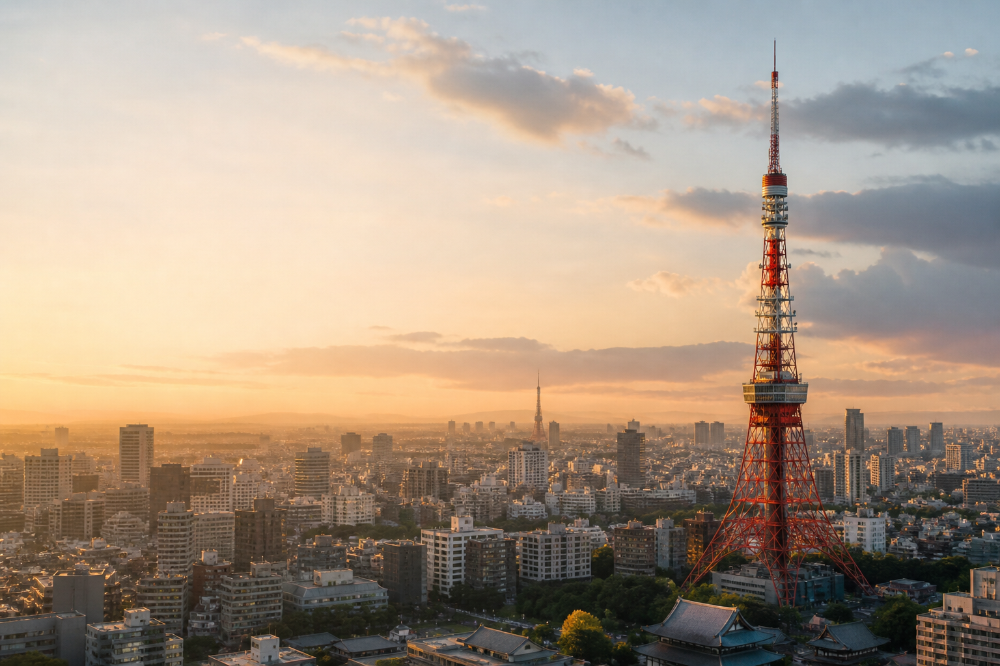

TOKYO / SUMMER 2026
東京六日，
沿著城市走向海。
Tokyo · Kamakura · Enoshima · Atami · Yokohama
16—21 AUGUST 2026
六天的東京與湘南旅行紀錄。從城市街區、海岸、神社到夏夜花火，把每天真正會走的路線整理成一份可以帶著旅行的指南。
DAILY JOURNALS
六天，六種東京的表情。
沿著真正會走的順序閱讀。每一頁都保留交通、拍照點、導航與現場判斷。


TRIP COLLECTIONS
旅行途中，需要的另一頁。
用餐、天氣、採買與作品場景，以同一套手機導覽連回每日行程。